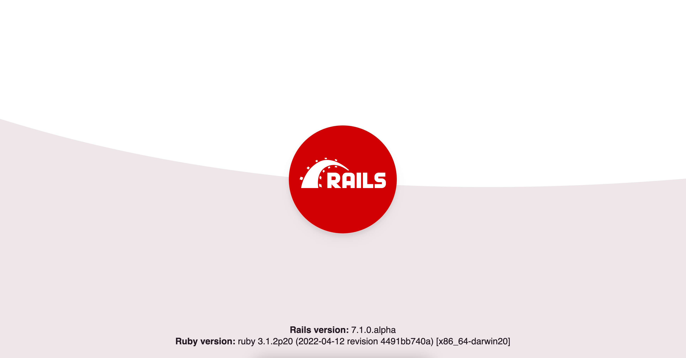
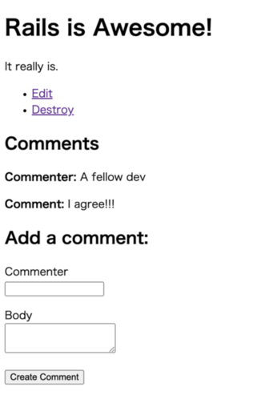

1 Supuestos de la Guía
Esta guía está diseñada para principiantes que quieren comenzar a crear una aplicación Rails desde cero. No se asume que tengas experiencia previa con Rails.
Rails es un marco de aplicación web que se ejecuta en el lenguaje de programación Ruby. Si no tienes experiencia previa con Ruby, encontrarás una curva de aprendizaje muy pronunciada al sumergirte directamente en Rails. Hay varias listas curadas de recursos en línea para aprender Ruby:
Ten en cuenta que algunos recursos, aunque todavía son excelentes, cubren versiones más antiguas de Ruby, y pueden no incluir algunas sintaxis que verás en el desarrollo diario con Rails.
2 ¿Qué es Rails?
Rails es un marco de desarrollo de aplicaciones web escrito en el lenguaje de programación Ruby. Está diseñado para hacer que la programación de aplicaciones web sea más fácil al hacer suposiciones sobre lo que cada desarrollador necesita para comenzar. Te permite escribir menos código mientras logras más que muchos otros lenguajes y marcos. Los desarrolladores experimentados en Rails también informan que hace que el desarrollo de aplicaciones web sea más divertido.
Rails es un software con opiniones. Hace la suposición de que hay una "mejor" manera de hacer las cosas, y está diseñado para fomentar esa manera - y en algunos casos para desalentar alternativas. Si aprendes "La Manera Rails" probablemente descubrirás un tremendo aumento en la productividad. Si persistes en traer viejos hábitos de otros lenguajes a tu desarrollo en Rails, y tratas de usar patrones que aprendiste en otro lugar, puedes tener una experiencia menos feliz.
La filosofía de Rails incluye dos principios rectores principales:
- No te Repitas: DRY es un principio de desarrollo de software que establece que "Cada pieza de conocimiento debe tener una representación única, inequívoca y autorizada dentro de un sistema". Al no escribir la misma información una y otra vez, nuestro código es más mantenible, más extensible y menos propenso a errores.
- Convención sobre Configuración: Rails tiene opiniones sobre la mejor manera de hacer muchas cosas en una aplicación web, y por defecto a este conjunto de convenciones, en lugar de requerir que especifiques minucias a través de interminables archivos de configuración.
3 Creando un Nuevo Proyecto Rails
CONSEJO: Las nuevas aplicaciones Rails vienen con un entorno de desarrollo Dev Container preconfigurado. Esta es la forma más rápida de comenzar con Rails. Para instrucciones, consulta Comenzando con Dev Containers
La mejor manera de leer esta guía es seguirla paso a paso. Todos los pasos son esenciales para ejecutar esta aplicación de ejemplo y no se necesita código o pasos adicionales.
Siguiendo esta guía, crearás un proyecto Rails llamado blog, un weblog (muy) simple. Antes de que puedas comenzar a construir la aplicación, necesitas asegurarte de que tienes Rails instalado.
NOTA: Los ejemplos a continuación usan $ para representar tu terminal en un sistema operativo tipo UNIX, aunque puede haber sido personalizado para aparecer de manera diferente. Si estás usando Windows, tu terminal se verá algo así como C:\source_code>.
3.1 Instalando Rails
Antes de instalar Rails, debes verificar que tu sistema tenga los prerrequisitos adecuados instalados. Estos incluyen:
- Ruby
- SQLite3
3.1.1 Instalando Ruby
Abre un terminal. En macOS abre Terminal.app; en Windows elige "Ejecutar" desde tu menú de Inicio y escribe cmd.exe. Cualquier comando precedido por un signo de dólar $ debe ejecutarse en la línea de comandos. Verifica que tengas una versión actual de Ruby instalada:
$ ruby --version
ruby 3.1.0
Rails requiere Ruby versión 3.1.0 o posterior. Se prefiere usar la última versión de Ruby. Si el número de versión devuelto es menor a ese número (como 2.3.7, o 1.8.7), necesitarás instalar una copia nueva de Ruby.
Para instalar Rails en Windows, primero necesitarás instalar Ruby Installer.
Para más métodos de instalación para la mayoría de los sistemas operativos, echa un vistazo a ruby-lang.org.
3.1.2 Instalando SQLite3
También necesitarás una instalación de la base de datos SQLite3. Muchos sistemas operativos tipo UNIX populares vienen con una versión aceptable de SQLite3. Otros pueden encontrar instrucciones de instalación en el sitio web de SQLite3.
Verifica que esté correctamente instalado y en tu PATH de carga:
$ sqlite3 --version
El programa debería informar su versión.
3.1.3 Instalando Rails
Para instalar Rails, usa el comando gem install proporcionado por RubyGems:
$ gem install rails
Para verificar que tienes todo instalado correctamente, deberías poder ejecutar lo siguiente en una nueva terminal:
$ rails --version
Rails 7.2.0
Si dice algo como "Rails 7.2.0", estás listo para continuar.
3.2 Creando la Aplicación Blog
Rails viene con una serie de scripts llamados generadores que están diseñados para hacer tu vida de desarrollo más fácil al crear todo lo necesario para comenzar a trabajar en una tarea particular. Uno de estos es el generador de nuevas aplicaciones, que te proporcionará la base de una nueva aplicación Rails para que no tengas que escribirla tú mismo.
Para usar este generador, abre una terminal, navega a un directorio donde tengas derechos para crear archivos y ejecuta:
$ rails new blog
Esto creará una aplicación Rails llamada Blog en un directorio blog e instalará las dependencias de gemas que ya están mencionadas en Gemfile usando bundle install.
CONSEJO: Puedes ver todas las opciones de línea de comandos que el generador de aplicaciones Rails acepta ejecutando rails new --help.
Después de crear la aplicación blog, cambia a su carpeta:
$ cd blog
El directorio blog tendrá una serie de archivos y carpetas generados que constituyen la estructura de una aplicación Rails. La mayor parte del trabajo en este tutorial ocurrirá en la carpeta app, pero aquí hay un resumen básico de la función de cada uno de los archivos y carpetas que Rails crea por defecto:
| Archivo/Carpeta | Propósito |
|---|---|
| app/ | Contiene los controladores, modelos, vistas, ayudantes, mailers, canales, trabajos y activos para tu aplicación. Te enfocarás en esta carpeta para el resto de esta guía. |
| bin/ | Contiene el script rails que inicia tu aplicación y puede contener otros scripts que usas para configurar, actualizar, desplegar o ejecutar tu aplicación. |
| config/ | Contiene la configuración para las rutas de tu aplicación, base de datos y más. Esto se cubre en más detalle en Configurando Aplicaciones Rails. |
| config.ru | Configuración de Rack para servidores basados en Rack usados para iniciar la aplicación. Para más información sobre Rack, consulta el sitio web de Rack. |
| db/ | Contiene tu esquema actual de base de datos, así como las migraciones de base de datos. |
| Dockerfile | Archivo de configuración para Docker. |
| Gemfile Gemfile.lock |
Estos archivos te permiten especificar qué dependencias de gemas son necesarias para tu aplicación Rails. Estos archivos son usados por la gema Bundler. Para más información sobre Bundler, consulta el sitio web de Bundler. |
| lib/ | Módulos extendidos para tu aplicación. |
| log/ | Archivos de registro de la aplicación. |
| public/ | Contiene archivos estáticos y activos compilados. Cuando tu aplicación está en ejecución, este directorio será expuesto tal cual. |
| Rakefile | Este archivo localiza y carga tareas que pueden ser ejecutadas desde la línea de comandos. Las definiciones de tareas están definidas a lo largo de los componentes de Rails. En lugar de cambiar Rakefile, deberías agregar tus propias tareas añadiendo archivos al directorio lib/tasks de tu aplicación. |
| README.md | Este es un breve manual de instrucciones para tu aplicación. Deberías editar este archivo para decirle a otros qué hace tu aplicación, cómo configurarla, etc. |
| storage/ | Archivos de Active Storage para el Servicio de Disco. Esto se cubre en Descripción General de Active Storage. |
| test/ | Pruebas unitarias, fixtures y otros aparatos de prueba. Estos se cubren en Pruebas de Aplicaciones Rails. |
| tmp/ | Archivos temporales (como archivos de caché y pid). |
| vendor/ | Un lugar para todo el código de terceros. En una aplicación Rails típica esto incluye gemas vendidas. |
| .dockerignore | Este archivo le dice a Docker qué archivos no debería copiar en el contenedor. |
| .gitattributes | Este archivo define metadatos para rutas específicas en un repositorio git. Estos metadatos pueden ser usados por git y otras herramientas para mejorar su comportamiento. Consulta la documentación de gitattributes para más información. |
| .github/ | Contiene archivos específicos de GitHub. |
| .gitignore | Este archivo le dice a git qué archivos (o patrones) debería ignorar. Consulta GitHub - Ignorando archivos para más información sobre ignorar archivos. |
| .rubocop.yml | Este archivo contiene la configuración para RuboCop. |
| .ruby-version | Este archivo contiene la versión predeterminada de Ruby. |
4 ¡Hola, Rails!
Para empezar, pongamos algo de texto en pantalla rápidamente. Para hacer esto, necesitas poner en marcha el servidor de tu aplicación Rails.
4.1 Iniciando el Servidor Web
En realidad, ya tienes una aplicación Rails funcional. Para verla, necesitas iniciar un servidor web en tu máquina de desarrollo. Puedes hacerlo ejecutando el siguiente comando en el directorio blog:
$ bin/rails server
CONSEJO: Si estás usando Windows, debes pasar los scripts bajo la carpeta bin directamente al intérprete de Ruby, por ejemplo, ruby bin\rails server.
CONSEJO: La compresión de activos JavaScript requiere que tengas un entorno de ejecución de JavaScript disponible en tu sistema, en ausencia de un entorno de ejecución verás un error execjs durante la compresión de activos. Por lo general, macOS y Windows vienen con un entorno de ejecución de JavaScript instalado. therubyrhino es el entorno de ejecución recomendado para usuarios de JRuby y se agrega por defecto al Gemfile en aplicaciones generadas bajo JRuby. Puedes investigar todos los entornos de ejecución compatibles en ExecJS.
Esto pondrá en marcha Puma, un servidor web distribuido con Rails por defecto. Para ver tu aplicación en acción, abre una ventana de navegador y navega a http://localhost:3000. Deberías ver la página de información predeterminada de Rails:

Cuando quieras detener el servidor web, presiona Ctrl+C en la ventana del terminal donde está en ejecución. En el entorno de desarrollo, Rails generalmente no requiere que reinicies el servidor; los cambios que realices en los archivos serán recogidos automáticamente por el servidor.
La página de inicio de Rails es la prueba de humo para una nueva aplicación Rails: asegura que tienes tu software configurado correctamente para servir una página.
4.2 Di "Hola", Rails
Para que Rails diga "Hola", necesitas crear al menos una ruta, un controlador con una acción y una vista. Una ruta mapea una solicitud a una acción de controlador. Una acción de controlador realiza el trabajo necesario para manejar la solicitud y prepara cualquier dato para la vista. Una vista muestra datos en un formato deseado.
En términos de implementación: Las rutas son reglas escritas en un DSL (Lenguaje Específico de Dominio) en Ruby. Los controladores son clases Ruby, y sus métodos públicos son acciones. Y las vistas son plantillas, generalmente escritas en una mezcla de HTML y Ruby.
Comencemos agregando una ruta a nuestro archivo de rutas, config/routes.rb, en la parte superior del bloque Rails.application.routes.draw:
Rails.application.routes.draw do
get "/articles", to: "articles#index"
# Para detalles sobre el DSL disponible dentro de este archivo, consulta https://guides.rubyonrails.org/routing.html
end
La ruta anterior declara que las solicitudes GET /articles se mapean a la acción index de ArticlesController.
Para crear ArticlesController y su acción index, ejecutaremos el generador de controladores (con la opción --skip-routes porque ya tenemos una ruta adecuada):
$ bin/rails generate controller Articles index --skip-routes
Rails creará varios archivos para ti:
create app/controllers/articles_controller.rb
invoke erb
create app/views/articles
create app/views/articles/index.html.erb
invoke test_unit
create test/controllers/articles_controller_test.rb
invoke helper
create app/helpers/articles_helper.rb
invoke test_unit
El más importante de estos es el archivo de controlador, app/controllers/articles_controller.rb. Echemos un vistazo:
class ArticlesController < ApplicationController
def index
end
end
La acción index está vacía. Cuando una acción no renderiza explícitamente una vista (o de otra manera desencadena una respuesta HTTP), Rails renderizará automáticamente una vista que coincida con el nombre del controlador y la acción. ¡Convención sobre Configuración! Las vistas se encuentran en el directorio app/views. Así que la acción index renderizará app/views/articles/index.html.erb por defecto.
Abramos app/views/articles/index.html.erb, y reemplacemos su contenido con:
<h1>¡Hola, Rails!</h1>
Si previamente detuviste el servidor web para ejecutar el generador de controladores, reinícialo con bin/rails server. Ahora visita http://localhost:3000/articles, ¡y ve nuestro texto mostrado!
4.3 Configurando la Página de Inicio de la Aplicación
En este momento, http://localhost:3000 todavía muestra una página con el logo de Ruby on Rails. Vamos a mostrar nuestro texto "¡Hola, Rails!" en http://localhost:3000 también. Para hacerlo, agregaremos una ruta que mapee el camino raíz de nuestra aplicación al controlador y acción apropiados.
Abramos config/routes.rb, y agreguemos la siguiente ruta root en la parte superior del bloque Rails.application.routes.draw:
Rails.application.routes.draw do
root "articles#index"
get "/articles", to: "articles#index"
end
Ahora podemos ver nuestro texto "¡Hola, Rails!" cuando visitamos http://localhost:3000, confirmando que la ruta root también está mapeada a la acción index de ArticlesController.
CONSEJO: Para aprender más sobre enrutamiento, consulta Enrutamiento de Rails desde el Exterior hacia Adentro.
5 Carga Automática
Las aplicaciones Rails no usan require para cargar el código de la aplicación.
Puedes haber notado que ArticlesController hereda de ApplicationController, pero app/controllers/articles_controller.rb no tiene nada como
require "application_controller" # NO HAGAS ESTO.
Las clases y módulos de la aplicación están disponibles en todas partes, no necesitas y no deberías cargar nada bajo app con require. Esta característica se llama carga automática, y puedes aprender más sobre ella en Carga y Recarga Automática de Constantes.
Solo necesitas llamadas require para dos casos de uso:
- Para cargar archivos bajo el directorio
lib. - Para cargar dependencias de gemas que tienen
require: falseen elGemfile.
6 MVC y Tú
Hasta ahora, hemos discutido rutas, controladores, acciones y vistas. Todas estas son piezas típicas de una aplicación web que sigue el patrón MVC (Modelo-Vista-Controlador). MVC es un patrón de diseño que divide las responsabilidades de una aplicación para hacerla más fácil de razonar. Rails sigue este patrón de diseño por convención.
Dado que tenemos un controlador y una vista para trabajar, generemos la siguiente pieza: un modelo.
6.1 Generando un Modelo
Un modelo es una clase Ruby que se utiliza para representar datos. Además, los modelos pueden interactuar con la base de datos de la aplicación a través de una característica de Rails llamada Active Record.
Para definir un modelo, usaremos el generador de modelos:
$ bin/rails generate model Article title:string body:text
NOTA: Los nombres de los modelos son singulares, porque un modelo instanciado representa un solo registro de datos. Para ayudar a recordar esta convención, piensa en cómo llamarías al constructor del modelo: queremos escribir Article.new(...), no Articles.new(...).
Esto creará varios archivos:
invoke active_record
create db/migrate/<timestamp>_create_articles.rb
create app/models/article.rb
invoke test_unit
create test/models/article_test.rb
create test/fixtures/articles.yml
Los dos archivos en los que nos centraremos son el archivo de migración (db/migrate/<timestamp>_create_articles.rb) y el archivo de modelo (app/models/article.rb).
6.2 Migraciones de Base de Datos
Las migraciones se utilizan para alterar la estructura de la base de datos de una aplicación. En las aplicaciones Rails, las migraciones se escriben en Ruby para que puedan ser independientes de la base de datos.
Echemos un vistazo al contenido de nuestro nuevo archivo de migración:
class CreateArticles < ActiveRecord::Migration[7.2]
def change
create_table :articles do |t|
t.string :title
t.text :body
t.timestamps
end
end
end
La llamada a create_table especifica cómo debe construirse la tabla articles. Por defecto, el método create_table agrega una columna id como clave primaria de incremento automático. Así que el primer registro en la tabla tendrá un id de 1, el siguiente registro tendrá un id de 2, y así sucesivamente.
Dentro del bloque para create_table, se definen dos columnas: title y body. Estas fueron agregadas por el generador porque las incluimos en nuestro comando de generación (bin/rails generate model Article title:string body:text).
En la última línea del bloque hay una llamada a t.timestamps. Este método define dos columnas adicionales llamadas created_at y updated_at. Como veremos, Rails las gestionará por nosotros, estableciendo los valores cuando creamos o actualizamos un objeto de modelo.
Ejecutemos nuestra migración con el siguiente comando:
$ bin/rails db:migrate
El comando mostrará una salida indicando que la tabla fue creada:
== CreateArticles: migrating ===================================
-- create_table(:articles)
-> 0.0018s
== CreateArticles: migrated (0.0018s) ==========================
CONSEJO: Para aprender más sobre migraciones, consulta Migraciones de Active Record.
Ahora podemos interactuar con la tabla usando nuestro modelo.
6.3 Usando un Modelo para Interactuar con la Base de Datos
Para jugar un poco con nuestro modelo, vamos a usar una característica de Rails llamada la consola. La consola es un entorno de codificación interactivo al igual que irb, pero también carga automáticamente Rails y nuestro código de aplicación.
Iniciemos la consola con este comando:
$ bin/rails console
Deberías ver un prompt irb como:
Loading development environment (Rails 7.2.0)
irb(main):001:0>
En este prompt, podemos inicializar un nuevo objeto Article:
irb> article = Article.new(title: "Hello Rails", body: "I am on Rails!")
Es importante notar que solo hemos inicializado este objeto. Este objeto no está guardado en la base de datos en absoluto. Solo está disponible en la consola en este momento. Para guardar el objeto en la base de datos, debemos llamar a save:
irb> article.save
(0.1ms) begin transaction
Article Create (0.4ms) INSERT INTO "articles" ("title", "body", "created_at", "updated_at") VALUES (?, ?, ?, ?) [["title", "Hello Rails"], ["body", "I am on Rails!"], ["created_at", "2020-01-18 23:47:30.734416"], ["updated_at", "2020-01-18 23:47:30.734416"]]
(0.9ms) commit transaction
=> true
La salida anterior muestra una consulta de base de datos INSERT INTO "articles" .... Esto indica que el artículo ha sido insertado en nuestra tabla. Y si miramos el objeto article nuevamente, vemos que algo interesante ha sucedido:
irb> article
=> #<Article id: 1, title: "Hello Rails", body: "I am on Rails!", created_at: "2020-01-18 23:47:30", updated_at: "2020-01-18 23:47:30">
Los atributos id, created_at y updated_at del objeto ahora están establecidos. Rails hizo esto por nosotros cuando guardamos el objeto.
Cuando queramos obtener este artículo de la base de datos, podemos llamar a find
en el modelo y pasar el id como argumento:
irb> Article.find(1)
=> #<Article id: 1, title: "Hello Rails", body: "I am on Rails!", created_at: "2020-01-18 23:47:30", updated_at: "2020-01-18 23:47:30">
Y cuando queramos obtener todos los artículos de la base de datos, podemos llamar a all
en el modelo:
irb> Article.all
=> #<ActiveRecord::Relation [#<Article id: 1, title: "Hello Rails", body: "I am on Rails!", created_at: "2020-01-18 23:47:30", updated_at: "2020-01-18 23:47:30">]>
Este método devuelve un objeto ActiveRecord::Relation, que puedes pensar como un array súper-potente.
CONSEJO: Para aprender más sobre modelos, consulta Conceptos Básicos de Active Record y Interfaz de Consulta de Active Record.
Los modelos son la pieza final del rompecabezas MVC. A continuación, conectaremos todas las piezas juntas.
6.4 Mostrando una Lista de Artículos
Volvamos a nuestro controlador en app/controllers/articles_controller.rb, y cambiemos la acción index para obtener todos los artículos de la base de datos:
class ArticlesController < ApplicationController
def index
@articles = Article.all
end
end
Las variables de instancia del controlador pueden ser accedidas por la vista. Eso significa que podemos referenciar @articles en app/views/articles/index.html.erb. Abramos ese archivo, y reemplacemos su contenido con:
<h1>Artículos</h1>
<ul>
<% @articles.each do |article| %>
<li>
<%= article.title %>
</li>
<% end %>
</ul>
El código anterior es una mezcla de HTML y ERB. ERB, abreviatura de Ruby Embebido, es un sistema de plantillas que evalúa código Ruby embebido en un documento. Aquí, podemos ver dos tipos de etiquetas ERB: <% %> y <%= %>. La etiqueta <% %> significa "evalúa el código Ruby encerrado". La etiqueta <%= %> significa "evalúa el código Ruby encerrado y muestra el valor que devuelve". Cualquier cosa que podrías escribir en un programa Ruby regular puede ir dentro de estas etiquetas ERB, aunque generalmente es mejor mantener el contenido de las etiquetas ERB corto, para la legibilidad.
Como no queremos mostrar el valor devuelto por @articles.each, hemos encerrado ese código en <% %>. Pero, como sí queremos mostrar el valor devuelto por article.title (para cada artículo), hemos encerrado ese código en <%= %>.
Podemos ver el resultado final visitando http://localhost:3000. (¡Recuerda que bin/rails server debe estar en ejecución!) Esto es lo que sucede cuando hacemos eso:
- El navegador hace una solicitud:
GET http://localhost:3000. - Nuestra aplicación Rails recibe esta solicitud.
- El enrutador de Rails mapea la ruta raíz a la acción
indexdeArticlesController. - La acción
indexusa el modeloArticlepara obtener todos los artículos en la base de datos. - Rails renderiza automáticamente la vista
app/views/articles/index.html.erb. - El código ERB en la vista es evaluado para mostrar HTML.
- El servidor envía una respuesta que contiene el HTML de vuelta al navegador.
Hemos conectado todas las piezas de MVC, ¡y tenemos nuestra primera acción de controlador! A continuación, pasaremos a la segunda acción.
7 CRUDit Donde CRUDit es Debido
Casi todas las aplicaciones web involucran operaciones CRUD (Crear, Leer, Actualizar y Eliminar). Incluso puedes encontrar que la mayoría del trabajo que hace tu aplicación es CRUD. Rails reconoce esto y proporciona muchas características para ayudar a simplificar el código que hace CRUD.
Comencemos explorando estas características agregando más funcionalidad a nuestra aplicación.
7.1 Mostrando un Solo Artículo
Actualmente tenemos una vista que lista todos los artículos en nuestra base de datos. Agreguemos una nueva vista que muestre el título y el cuerpo de un solo artículo.
Comenzamos agregando una nueva ruta que mapea a una nueva acción de controlador (que agregaremos a continuación). Abre config/routes.rb, e inserta la última ruta mostrada aquí:
Rails.application.routes.draw do
root "articles#index"
get "/articles", to: "articles#index"
get "/articles/:id", to: "articles#show"
end
La nueva ruta es otra ruta get, pero tiene algo extra en su camino: :id. Esto designa un parámetro de ruta. Un parámetro de ruta captura un segmento del camino de la solicitud y pone ese valor en el Hash params, que es accesible por la acción del controlador. Por ejemplo, al manejar una solicitud como GET http://localhost:3000/articles/1, 1 sería capturado como el valor para :id, que luego sería accesible como params[:id] en la acción show de ArticlesController.
Agreguemos esa acción show ahora, debajo de la acción index en app/controllers/articles_controller.rb:
class ArticlesController < ApplicationController
def index
@articles = Article.all
end
def show
@article = Article.find(params[:id])
end
end
La acción show llama a Article.find (mencionado anteriormente) con el ID capturado por el parámetro de ruta. El artículo devuelto se almacena en la variable de instancia @article, por lo que es accesible por la vista. Por defecto, la acción show renderizará app/views/articles/show.html.erb.
Vamos a crear app/views/articles/show.html.erb, con el siguiente contenido:
<h1><%= @article.title %></h1>
<p><%= @article.body %></p>
¡Ahora podemos ver el artículo cuando visitamos http://localhost:3000/articles/1!
Para terminar, agreguemos una forma conveniente de llegar a la página de un artículo. Enlazaremos el título de cada artículo en app/views/articles/index.html.erb a su página:
<h1>Artículos</h1>
<ul>
<% @articles.each do |article| %>
<li>
<a href="/articles/<%= article.id %>">
<%= article.title %>
</a>
</li>
<% end %>
</ul>
7.2 Enrutamiento de Recursos
Hasta ahora, hemos cubierto la "R" (Leer) de CRUD. Eventualmente cubriremos la "C" (Crear), "U" (Actualizar) y "D" (Eliminar). Como habrás adivinado, lo haremos agregando nuevas rutas, acciones de controlador y vistas. Siempre que tengamos una combinación de rutas, acciones de controlador y vistas que trabajen juntas para realizar operaciones CRUD en una entidad, llamamos a esa entidad un recurso. Por ejemplo, en nuestra aplicación, diríamos que un artículo es un recurso.
Rails proporciona un método de rutas llamado resources
que mapea todas las rutas convencionales para una colección de recursos, como artículos. Así que antes de proceder a las secciones "C", "U" y "D", reemplacemos las dos rutas get en config/routes.rb con resources:
Rails.application.routes.draw do
root "articles#index"
resources :articles
end
Podemos inspeccionar qué rutas están mapeadas ejecutando el comando bin/rails routes:
$ bin/rails routes
Prefix Verb URI Pattern Controller#Action
root GET / articles#index
articles GET /articles(.:format) articles#index
new_article GET /articles/new(.:format) articles#new
article GET /articles/:id(.:format) articles#show
POST /articles(.:format) articles#create
edit_article GET /articles/:id/edit(.:format) articles#edit
PATCH /articles/:id(.:format) articles#update
DELETE /articles/:id(.:format) articles#destroy
El método resources también configura métodos de ayuda de URL y ruta que podemos usar para evitar que nuestro código dependa de una configuración de ruta específica. Los valores en la columna "Prefix" arriba más un sufijo de _url o _path forman los nombres de estos ayudantes. Por ejemplo, el ayudante article_path devuelve "/articles/#{article.id}" cuando se le da un artículo. Podemos usarlo para ordenar nuestros enlaces en app/views/articles/index.html.erb:
<h1>Artículos</h1>
<ul>
<% @articles.each do |article| %>
<li>
<a href="<%= article_path(article) %>">
<%= article.title %>
</a>
</li>
<% end %>
</ul>
Sin embargo, llevaremos esto un paso más allá utilizando el ayudante link_to.
El ayudante link_to renderiza un enlace con su primer argumento como el texto del enlace y su segundo argumento como el destino del enlace. Si pasamos un objeto de modelo como el segundo argumento, link_to llamará al ayudante de camino apropiado para convertir el objeto en un camino. Por ejemplo, si pasamos un artículo, link_to llamará a article_path. Así que app/views/articles/index.html.erb se convierte en:
<h1>Artículos</h1>
<ul>
<% @articles.each do |article| %>
<li>
<%= link_to article.title, article %>
</li>
<% end %>
</ul>
¡Genial!
CONSEJO: Para aprender más sobre enrutamiento, consulta Enrutamiento de Rails desde el Exterior hacia Adentro.
7.3 Creando un Nuevo Artículo
Ahora pasamos a la "C" (Crear) de CRUD. Típicamente, en aplicaciones web, crear un nuevo recurso es un proceso de varios pasos. Primero, el usuario solicita un formulario para completar. Luego, el usuario envía el formulario. Si no hay errores, entonces el recurso se crea y se muestra algún tipo de confirmación. De lo contrario, el formulario se muestra nuevamente con mensajes de error, y el proceso se repite.
En una aplicación Rails, estos pasos son manejados convencionalmente por las acciones new y create de un controlador. Agreguemos una implementación típica de estas acciones a app/controllers/articles_controller.rb, debajo de la acción show:
class ArticlesController < ApplicationController
def index
@articles = Article.all
end
def show
@article = Article.find(params[:id])
end
def new
@article = Article.new
end
def create
@article = Article.new(title: "...", body: "...")
if @article.save
redirect_to @article
else
render :new, status: :unprocessable_entity
end
end
end
La acción new instancia un nuevo artículo, pero no lo guarda. Este artículo se usará en la vista al construir el formulario. Por defecto, la acción new renderizará app/views/articles/new.html.erb, que crearemos a continuación.
La acción create instancia un nuevo artículo con valores para el título y el cuerpo, e intenta guardarlo. Si el artículo se guarda con éxito, la acción redirige el navegador a la página del artículo en "http://localhost:3000/articles/#{@article.id}". De lo contrario, la acción muestra nuevamente el formulario renderizando app/views/articles/new.html.erb con el código de estado 422 Entidad No Procesable. El título y el cuerpo aquí son valores ficticios. Después de crear el formulario, volveremos y cambiaremos estos.
NOTA: redirect_to
hará que el navegador haga una nueva solicitud,
mientras que render
renderiza la vista especificada para la solicitud actual.
Es importante usar redirect_to después de mutar la base de datos o el estado de la aplicación.
De lo contrario, si el usuario actualiza la página, el navegador hará la misma solicitud, y la mutación se repetirá.
7.3.1 Usando un Constructor de Formularios
Usaremos una característica de Rails llamada un constructor de formularios para crear nuestro formulario. Usando un constructor de formularios, podemos escribir una cantidad mínima de código para mostrar un formulario que esté completamente configurado y siga las convenciones de Rails.
Creemos app/views/articles/new.html.erb con el siguiente contenido:
<h1>Nuevo Artículo</h1>
<%= form_with model: @article do |form| %>
<div>
<%= form.label :title %><br>
<%= form.text_field :title %>
</div>
<div>
<%= form.label :body %><br>
<%= form.text_area :body %>
</div>
<div>
<%= form.submit %>
</div>
<% end %>
El método de ayuda form_with
instancia un constructor de formularios. En el bloque form_with llamamos a
métodos como label
y text_field
en el constructor de formularios para mostrar los elementos de formulario apropiados.
La salida resultante de nuestra llamada a form_with se verá como:
<form action="/articles" accept-charset="UTF-8" method="post">
<input type="hidden" name="authenticity_token" value="...">
<div>
<label for="article_title">Title</label><br>
<input type="text" name="article[title]" id="article_title">
</div>
<div>
<label for="article_body">Body</label><br>
<textarea name="article[body]" id="article_body"></textarea>
</div>
<div>
<input type="submit" name="commit" value="Create Article" data-disable-with="Create Article">
</div>
</form>
CONSEJO: Para aprender más sobre constructores de formularios, consulta Ayudantes de Formularios de Vista de Acción.
7.3.2 Usando Parámetros Fuertes
Los datos enviados del formulario se colocan en el Hash params, junto con los parámetros de ruta capturados. Por lo tanto, la acción create puede acceder al título enviado a través de params[:article][:title] y al cuerpo enviado a través de params[:article][:body]. Podríamos pasar estos valores individualmente a Article.new, pero eso sería verboso y posiblemente propenso a errores. Y se volvería peor a medida que agreguemos más campos.
En su lugar, pasaremos un solo Hash que contenga los valores. Sin embargo, aún debemos especificar qué valores están permitidos en ese Hash. De lo contrario, un usuario malintencionado podría potencialmente enviar campos de formulario adicionales y sobrescribir datos privados. De hecho, si pasamos el Hash params[:article] sin filtrar directamente a Article.new, Rails arrojará un ForbiddenAttributesError para alertarnos sobre el problema. Así que usaremos una característica de Rails llamada Parámetros Fuertes para filtrar params. Piénsalo como tipado fuerte
para params.
Agreguemos un método privado al final de app/controllers/articles_controller.rb
llamado article_params que filtre params. Y cambiemos create para usarlo:
class ArticlesController < ApplicationController
def index
@articles = Article.all
end
def show
@article = Article.find(params[:id])
end
def new
@article = Article.new
end
def create
@article = Article.new(article_params)
if @article.save
redirect_to @article
else
render :new, status: :unprocessable_entity
end
end
private
def article_params
params.require(:article).permit(:title, :body)
end
end
CONSEJO: Para aprender más sobre Parámetros Fuertes, consulta Descripción General del Controlador de Acción § Parámetros Fuertes.
7.3.3 Validaciones y Mostrando Mensajes de Error
Como hemos visto, crear un recurso es un proceso de varios pasos. Manejar la entrada inválida del usuario es otro paso de ese proceso. Rails proporciona una característica llamada validaciones para ayudarnos a lidiar con la entrada inválida del usuario. Las validaciones son reglas que se verifican antes de que un objeto de modelo sea guardado. Si alguna de las verificaciones falla, el guardado será abortado, y se agregarán mensajes de error apropiados al atributo errors del objeto de modelo.
Agreguemos algunas validaciones a nuestro modelo en app/models/article.rb:
class Article < ApplicationRecord
validates :title, presence: true
validates :body, presence: true, length: { minimum: 10 }
end
La primera validación declara que un valor title debe estar presente. Debido a que title es una cadena, esto significa que el valor title debe contener al menos un carácter no blanco.
La segunda validación declara que un valor body también debe estar presente. Además, declara que el valor body debe tener al menos 10 caracteres de longitud.
NOTA: Puede que te preguntes dónde se definen los atributos title y body. Active Record define automáticamente atributos de modelo para cada columna de tabla, por lo que no tienes que declarar esos atributos en tu archivo de modelo.
Con nuestras validaciones en su lugar, modifiquemos app/views/articles/new.html.erb para mostrar cualquier mensaje de error para title y body:
<h1>Nuevo Artículo</h1>
<%= form_with model: @article do |form| %>
<div>
<%= form.label :title %><br>
<%= form.text_field :title %>
<% @article.errors.full_messages_for(:title).each do |message| %>
<div><%= message %></div>
<% end %>
</div>
<div>
<%= form.label :body %><br>
<%= form.text_area :body %><br>
<% @article.errors.full_messages_for(:body).each do |message| %>
<div><%= message %></div>
<% end %>
</div>
<div>
<%= form.submit %>
</div>
<% end %>
El método full_messages_for
devuelve un array de mensajes de error amigables para el usuario para un atributo especificado. Si no hay errores para ese atributo, el array estará vacío.
Para entender cómo todo esto funciona junto, echemos otro vistazo a las acciones new y create del controlador:
def new
@article = Article.new
end
def create
@article = Article.new(article_params)
if @article.save
redirect_to @article
else
render :new, status: :unprocessable_entity
end
end
Cuando visitamos http://localhost:3000/articles/new, la solicitud GET /articles/new se mapea a la acción new. La acción new no intenta guardar @article. Por lo tanto, no se verifican validaciones, y no habrá mensajes de error.
Cuando enviamos el formulario, la solicitud POST /articles se mapea a la acción create. La acción create sí intenta guardar @article. Por lo tanto, las validaciones sí se verifican. Si alguna validación falla, @article no se guardará, y app/views/articles/new.html.erb se renderizará con mensajes de error.
CONSEJO: Para aprender más sobre validaciones, consulta Validaciones de Active Record. Para aprender más sobre mensajes de error de validación, consulta Validaciones de Active Record § Trabajando con Errores de Validación.
7.3.4 Terminando
Ahora podemos crear un artículo visitando http://localhost:3000/articles/new. Para terminar, enlacemos a esa página desde la parte inferior de app/views/articles/index.html.erb:
<h1>Artículos</h1>
<ul>
<% @articles.each do |article| %>
<li>
<%= link_to article.title, article %>
</li>
<% end %>
</ul>
<%= link_to "Nuevo Artículo", new_article_path %>
7.4 Actualizando un Artículo
Hemos cubierto la "CR" de CRUD. Ahora pasemos a la "U" (Actualizar). Actualizar un recurso es muy similar a crear un recurso. Ambos son procesos de varios pasos. Primero, el usuario solicita un formulario para editar los datos. Luego, el usuario envía el formulario. Si no hay errores, entonces el recurso se actualiza. De lo contrario, el formulario se muestra nuevamente con mensajes de error, y el proceso se repite.
Estos pasos son manejados convencionalmente por las acciones edit y update de un controlador. Agreguemos una implementación típica de estas acciones a app/controllers/articles_controller.rb, debajo de la acción create:
class ArticlesController < ApplicationController
def index
@articles = Article.all
end
def show
@article = Article.find(params[:id])
end
def new
@article = Article.new
end
def create
@article = Article.new(article_params)
if @article.save
redirect_to @article
else
render :new, status: :unprocessable_entity
end
end
def edit
@article = Article.find(params[:id])
end
def update
@article = Article.find(params[:id])
if @article.update(article_params)
redirect_to @article
else
render :edit, status: :unprocessable_entity
end
end
private
def article_params
params.require(:article).permit(:title, :body)
end
end
Observa cómo las acciones edit y update se parecen a las acciones new y create.
La acción edit obtiene el artículo de la base de datos y lo almacena en @article para que pueda ser usado al construir el formulario. Por defecto, la acción edit renderizará app/views/articles/edit.html.erb.
La acción update (re-)obtiene el artículo de la base de datos e intenta actualizarlo con los datos del formulario enviados filtrados por article_params. Si no fallan validaciones y la actualización es exitosa, la acción redirige el navegador a la página del artículo. De lo contrario, la acción muestra nuevamente el formulario —con mensajes de error— renderizando app/views/articles/edit.html.erb.
7.4.1 Usando Parciales para Compartir Código de Vista
Nuestro formulario de edit se verá igual que nuestro formulario de new. Incluso el código será el mismo, gracias al constructor de formularios de Rails y al enrutamiento de recursos. El constructor de formularios configura automáticamente el formulario para hacer el tipo de solicitud apropiado, basado en si el objeto de modelo ha sido guardado previamente.
Debido a que el código será el mismo, vamos a factorizarlo en una vista compartida llamada un parcial. Creemos app/views/articles/_form.html.erb con el siguiente contenido:
<%= form_with model: article do |form| %>
<div>
<%= form.label :title %><br>
<%= form.text_field :title %>
<% article.errors.full_messages_for(:title).each do |message| %>
<div><%= message %></div>
<% end %>
</div>
<div>
<%= form.label :body %><br>
<%= form.text_area :body %><br>
<% article.errors.full_messages_for(:body).each do |message| %>
<div><%= message %></div>
<% end %>
</div>
<div>
<%= form.submit %>
</div>
<% end %>
El código anterior es el mismo que nuestro formulario en app/views/articles/new.html.erb, excepto que todas las ocurrencias de @article han sido reemplazadas por article. Debido a que los parciales son código compartido, es una buena práctica que no dependan de variables de instancia específicas establecidas por una acción de controlador. En su lugar, pasaremos el artículo al parcial como una variable local.
Actualicemos app/views/articles/new.html.erb para usar el parcial a través de render:
<h1>Nuevo Artículo</h1>
<%= render "form", article: @article %>
NOTA: El nombre de archivo de un parcial debe estar prefijado con un guión bajo, por ejemplo, _form.html.erb. Pero al renderizar, se referencia sin el guión bajo, por ejemplo, render "form".
Y ahora, creemos un app/views/articles/edit.html.erb muy similar:
<h1>Editar Artículo</h1>
<%= render "form", article: @article %>
CONSEJO: Para aprender más sobre parciales, consulta Diseños y Renderizado en Rails § Usando Parciales.
7.4.2 Terminando
Ahora podemos actualizar un artículo visitando su página de edición, por ejemplo, http://localhost:3000/articles/1/edit. Para terminar, enlacemos a la página de edición desde la parte inferior de app/views/articles/show.html.erb:
<h1><%= @article.title %></h1>
<p><%= @article.body %></p>
<ul>
<li><%= link_to "Editar", edit_article_path(@article) %></li>
</ul>
7.5 Eliminando un Artículo
Finalmente, llegamos a la "D" (Eliminar) de CRUD. Eliminar un recurso es un proceso más simple que crear o actualizar. Solo requiere una ruta y una acción de controlador. Y nuestro enrutamiento de recursos (resources :articles) ya proporciona la ruta, que mapea solicitudes DELETE /articles/:id a la acción destroy de ArticlesController.
Así que, agreguemos una acción destroy típica a app/controllers/articles_controller.rb, debajo de la acción update:
class ArticlesController < ApplicationController
def index
@articles = Article.all
end
def show
@article = Article.find(params[:id])
end
def new
@article = Article.new
end
def create
@article = Article.new(article_params)
if @article.save
redirect_to @article
else
render :new, status: :unprocessable_entity
end
end
def edit
@article = Article.find(params[:id])
end
def update
@article = Article.find(params[:id])
if @article.update(article_params)
redirect_to @article
else
render :edit, status: :unprocessable_entity
end
end
def destroy
@article = Article.find(params[:id])
@article.destroy
redirect_to root_path, status: :see_other
end
private
def article_params
params.require(:article).permit(:title, :body)
end
end
La acción destroy obtiene el artículo de la base de datos y llama a destroy
en él. Luego, redirige el navegador al camino raíz con el código de estado
303 Ver Otro.
Hemos elegido redirigir al camino raíz porque ese es nuestro punto de acceso principal para los artículos. Pero, en otras circunstancias, podrías elegir redirigir a, por ejemplo, articles_path.
Ahora agreguemos un enlace en la parte inferior de app/views/articles/show.html.erb para que podamos eliminar un artículo desde su propia página:
<h1><%= @article.title %></h1>
<p><%= @article.body %></p>
<ul>
<li><%= link_to "Editar", edit_article_path(@article) %></li>
<li><%= link_to "Eliminar", article_path(@article), data: {
turbo_method: :delete,
turbo_confirm: "¿Estás seguro?"
} %></li>
</ul>
En el código anterior, usamos la opción data para establecer los atributos HTML data-turbo-method y data-turbo-confirm del enlace "Eliminar". Ambos de estos atributos se conectan a Turbo, que está incluido por defecto en las aplicaciones Rails nuevas. data-turbo-method="delete" hará que el enlace haga una solicitud DELETE en lugar de una solicitud GET. data-turbo-confirm="¿Estás seguro?" hará que aparezca un cuadro de diálogo de confirmación cuando se haga clic en el enlace. Si el usuario cancela el cuadro de diálogo, la solicitud será abortada.
¡Y eso es todo! Ahora podemos listar, mostrar, crear, actualizar y eliminar artículos. ¡InCRUDible!
8 Agregando un Segundo Modelo
Es hora de agregar un segundo modelo a la aplicación. El segundo modelo manejará comentarios en artículos.
8.1 Generando un Modelo
Vamos a ver el mismo generador que usamos antes al crear el modelo Article. Esta vez crearemos un modelo Comment para mantener una referencia a un artículo. Ejecuta este comando en tu terminal:
$ bin/rails generate model Comment commenter:string body:text article:references
Este comando generará cuatro archivos:
| Archivo | Propósito |
|---|---|
| db/migrate/20140120201010_create_comments.rb | Migración para crear la tabla de comentarios en tu base de datos (tu nombre incluirá una marca de tiempo diferente) |
| app/models/comment.rb | El modelo Comment |
| test/models/comment_test.rb | Armazón de prueba para el modelo comment |
| test/fixtures/comments.yml | Comentarios de muestra para usar en pruebas |
Primero, echa un vistazo a app/models/comment.rb:
class Comment < ApplicationRecord
belongs_to :article
end
Esto es muy similar al modelo Article que viste antes. La diferencia es la línea belongs_to :article, que configura una asociación de Active Record. Aprenderás un poco sobre asociaciones en la siguiente sección de esta guía.
La palabra clave (:references) utilizada en el comando de shell es un tipo de dato especial para modelos. Crea una nueva columna en tu tabla de base de datos con el nombre del modelo proporcionado seguido de un _id que puede contener valores enteros. Para obtener una mejor comprensión, analiza el archivo db/schema.rb después de ejecutar la migración.
Además del modelo, Rails también ha hecho una migración para crear la tabla de base de datos correspondiente:
class CreateComments < ActiveRecord::Migration[7.2]
def change
create_table :comments do |t|
t.string :commenter
t.text :body
t.references :article, null: false, foreign_key: true
t.timestamps
end
end
end
La línea t.references crea una columna entera llamada article_id, un índice para ella y una restricción de clave externa que apunta a la columna id de la tabla articles. Adelante y ejecuta la migración:
$ bin/rails db:migrate
Rails es lo suficientemente inteligente como para ejecutar solo las migraciones que no han sido ejecutadas contra la base de datos actual, así que en este caso solo verás:
== CreateComments: migrating =================================================
-- create_table(:comments)
-> 0.0115s
== CreateComments: migrated (0.0119s) ========================================
8.2 Asociando Modelos
Las asociaciones de Active Record te permiten declarar fácilmente la relación entre dos modelos. En el caso de los comentarios y los artículos, podrías escribir las relaciones de esta manera:
- Cada comentario pertenece a un artículo.
- Un artículo puede tener muchos comentarios.
De hecho, esto es muy cercano a la sintaxis que Rails usa para declarar esta asociación. Ya has visto la línea de código dentro del modelo Comment (app/models/comment.rb) que hace que cada comentario pertenezca a un Artículo:
class Comment < ApplicationRecord
belongs_to :article
end
Necesitarás editar app/models/article.rb para agregar el otro lado de la asociación:
class Article < ApplicationRecord
has_many :comments
validates :title, presence: true
validates :body, presence: true, length: { minimum: 10 }
end
Estas dos declaraciones habilitan un buen número de comportamientos automáticos. Por ejemplo, si tienes una variable de instancia @article que contiene un artículo, puedes recuperar todos los comentarios que pertenecen a ese artículo como un array usando @article.comments.
CONSEJO: Para más información sobre asociaciones de Active Record, consulta la guía Asociaciones de Active Record.
8.3 Agregando una Ruta para Comentarios
Al igual que con el controlador articles, necesitaremos agregar una ruta para que Rails sepa a dónde nos gustaría navegar para ver comments. Abre el archivo config/routes.rb nuevamente, y edítalo de la siguiente manera:
Rails.application.routes.draw do
root "articles#index"
resources :articles do
resources :comments
end
end
Esto crea comments como un recurso anidado dentro de articles. Esta es otra parte de capturar la relación jerárquica que existe entre artículos y comentarios.
CONSEJO: Para más información sobre enrutamiento, consulta la guía Enrutamiento de Rails.
8.4 Generando un Controlador
Con el modelo en mano, puedes centrar tu atención en crear un controlador correspondiente. Nuevamente, usaremos el mismo generador que usamos antes:
$ bin/rails generate controller Comments
Esto crea tres archivos y un directorio vacío:
| Archivo/Directorio | Propósito |
|---|---|
| app/controllers/comments_controller.rb | El controlador Comments |
| app/views/comments/ | Las vistas del controlador se almacenan aquí |
| test/controllers/comments_controller_test.rb | La prueba para el controlador |
| app/helpers/comments_helper.rb | Un archivo de ayuda de vista |
Al igual que con cualquier blog, nuestros lectores crearán sus comentarios directamente después de leer el artículo, y una vez que hayan agregado su comentario, serán enviados de vuelta a la página de visualización del artículo para ver su comentario ahora listado. Debido a esto, nuestro CommentsController está allí para proporcionar un método para crear comentarios y eliminar comentarios de spam cuando lleguen.
Así que primero, conectaremos la plantilla de visualización de Article (app/views/articles/show.html.erb) para permitirnos hacer un nuevo comentario:
<h1><%= @article.title %></h1>
<p><%= @article.body %></p>
<ul>
<li><%= link_to "Editar", edit_article_path(@article) %></li>
<li><%= link_to "Eliminar", article_path(@article), data: {
turbo_method: :delete,
turbo_confirm: "¿Estás seguro?"
} %></li>
</ul>
<h2>Agregar un comentario:</h2>
<%= form_with model: [ @article, @article.comments.build ] do |form| %>
<p>
<%= form.label :commenter %><br>
<%= form.text_field :commenter %>
</p>
<p>
<%= form.label :body %><br>
<%= form.text_area :body %>
</p>
<p>
<%= form.submit %>
</p>
<% end %>
Esto agrega un formulario en la página de visualización de Article que crea un nuevo comentario llamando a la acción create del CommentsController. La llamada a form_with aquí usa un array, que construirá una ruta anidada, como /articles/1/comments.
Conectemos el create en app/controllers/comments_controller.rb:
class CommentsController < ApplicationController
def create
@article = Article.find(params[:article_id])
@comment = @article.comments.create(comment_params)
redirect_to article_path(@article)
end
private
def comment_params
params.require(:comment).permit(:commenter, :body)
end
end
Verás un poco más de complejidad aquí que en el controlador para artículos. Eso es un efecto secundario de la anidación que has configurado. Cada solicitud para un comentario tiene que seguir el rastro del artículo al que el comentario está adjunto, por lo tanto, la llamada inicial al método find del modelo Article para obtener el artículo en cuestión.
Además, el código aprovecha algunos de los métodos disponibles para una asociación. Usamos el método create en @article.comments para crear y guardar el comentario. Esto vinculará automáticamente el comentario para que pertenezca a ese artículo en particular.
Una vez que hemos hecho el nuevo comentario, enviamos al usuario de vuelta al artículo original usando el ayudante article_path(@article). Como ya hemos visto, esto llama a la acción show del ArticlesController, que a su vez renderiza la plantilla show.html.erb. Aquí es donde queremos que se muestre el comentario, así que agreguemos eso a app/views/articles/show.html.erb.
<h1><%= @article.title %></h1>
<p><%= @article.body %></p>
<ul>
<li><%= link_to "Editar", edit_article_path(@article) %></li>
<li><%= link_to "Eliminar", article_path(@article), data: {
turbo_method: :delete,
turbo_confirm: "¿Estás seguro?"
} %></li>
</ul>
<h2>Comentarios</h2>
<% @article.comments.each do |comment| %>
<p>
<strong>Comentarista:</strong>
<%= comment.commenter %>
</p>
<p>
<strong>Comentario:</strong>
<%= comment.body %>
</p>
<% end %>
<h2>Agregar un comentario:</h2>
<%= form_with model: [ @article, @article.comments.build ] do |form| %>
<p>
<%= form.label :commenter %><br>
<%= form.text_field :commenter %>
</p>
<p>
<%= form.label :body %><br>
<%= form.text_area :body %>
</p>
<p>
<%= form.submit %>
</p>
<% end %>
Ahora puedes agregar artículos y comentarios a tu blog y hacer que aparezcan en los lugares correctos.

9 Refactorización
Ahora que tenemos artículos y comentarios funcionando, echa un vistazo a la plantilla app/views/articles/show.html.erb. Se está volviendo larga y complicada. Podemos usar parciales para limpiarla.
9.1 Renderizando Colecciones Parciales
Primero, haremos un parcial de comentario para extraer la visualización de todos los comentarios para el artículo. Crea el archivo app/views/comments/_comment.html.erb y pon lo siguiente en él:
<p>
<strong>Comentarista:</strong>
<%= comment.commenter %>
</p>
<p>
<strong>Comentario:</strong>
<%= comment.body %>
</p>
Luego puedes cambiar app/views/articles/show.html.erb para que se vea como lo siguiente:
<h1><%= @article.title %></h1>
<p><%= @article.body %></p>
<ul>
<li><%= link_to "Editar", edit_article_path(@article) %></li>
<li><%= link_to "Eliminar", article_path(@article), data: {
turbo_method: :delete,
turbo_confirm: "¿Estás seguro?"
} %></li>
</ul>
<h2>Comentarios</h2>
<%= render @article.comments %>
<h2>Agregar un comentario:</h2>
<%= form_with model: [ @article, @article.comments.build ] do |form| %>
<p>
<%= form.label :commenter %><br>
<%= form.text_field :commenter %>
</p>
<p>
<%= form.label :body %><br>
<%= form.text_area :body %>
</p>
<p>
<%= form.submit %>
</p>
<% end %>
Esto ahora renderizará el parcial en app/views/comments/_comment.html.erb una vez por cada comentario que esté en la colección @article.comments. A medida que el método render itera sobre la colección @article.comments, asigna cada comentario a una variable local llamada igual que el parcial, en este caso comment, que luego está disponible en el parcial para que lo mostremos.
9.2 Renderizando un Formulario Parcial
También movamos esa sección de nuevo comentario a su propio parcial. Nuevamente, crea un archivo app/views/comments/_form.html.erb que contenga:
<%= form_with model: [ article, article.comments.build ] do |form| %>
<p>
<%= form.label :commenter %><br>
<%= form.text_field :commenter %>
</p>
<p>
<%= form.label :body %><br>
<%= form.text_area :body %>
</p>
<p>
<%= form.submit %>
</p>
<% end %>
Luego haz que app/views/articles/show.html.erb se vea como lo siguiente:
<h1><%= @article.title %></h1>
<p><%= @article.body %></p>
<ul>
<li><%= link_to "Editar", edit_article_path(@article) %></li>
<li><%= link_to "Eliminar", article_path(@article), data: {
turbo_method: :delete,
turbo_confirm: "¿Estás seguro?"
} %></li>
</ul>
<h2>Comentarios</h2>
<%= render @article.comments %>
<h2>Agregar un comentario:</h2>
<%= render "comments/form", article: @article %>
El segundo render solo define la plantilla parcial que queremos renderizar, comments/form. Rails es lo suficientemente inteligente como para detectar la barra diagonal en esa cadena y darse cuenta de que quieres renderizar el archivo _form.html.erb en el directorio app/views/comments.
9.3 Usando Concerns
Los concerns son una forma de hacer que los controladores o modelos grandes sean más fáciles de entender y gestionar. Esto también tiene la ventaja de la reutilización cuando múltiples modelos (o controladores) comparten los mismos concerns. Los concerns se implementan utilizando módulos que contienen métodos que representan una parte bien definida de la funcionalidad de la que es responsable un modelo o controlador. En otros lenguajes, los módulos a menudo se conocen como mixins.
Puedes usar concerns en tu controlador o modelo de la misma manera que usarías cualquier módulo. Cuando creaste tu aplicación por primera vez con rails new blog, se crearon dos carpetas dentro de app/ junto con el resto:
app/controllers/concerns
app/models/concerns
En el ejemplo a continuación, implementaremos una nueva característica para nuestro blog que se beneficiaría de usar un concern. Luego, crearemos un concern y refactorizaremos el código para usarlo, haciendo que el código sea más DRY y mantenible.
Un artículo de blog puede tener varios estados - por ejemplo, puede ser visible para todos (es decir, public), o solo visible para el autor (es decir, private). También puede estar oculto para todos pero aún recuperable (es decir, archived). Los comentarios pueden estar ocultos o visibles de manera similar. Esto podría representarse usando una columna status en cada modelo.
Primero, ejecutemos las siguientes migraciones para agregar status a Articles y Comments:
$ bin/rails generate migration AddStatusToArticles status:string
$ bin/rails generate migration AddStatusToComments status:string
Y a continuación, actualicemos la base de datos con las migraciones generadas:
$ bin/rails db:migrate
Para elegir el estado para los artículos y comentarios existentes, puedes agregar un valor predeterminado a los archivos de migración generados agregando la opción default: "public" y lanzar las migraciones nuevamente. También puedes llamar en una consola de Rails Article.update_all(status: "public") y Comment.update_all(status: "public").
CONSEJO: Para aprender más sobre migraciones, consulta Migraciones de Active Record.
También tenemos que permitir la clave :status como parte del parámetro fuerte, en app/controllers/articles_controller.rb:
private
def article_params
params.require(:article).permit(:title, :body, :status)
end
y en app/controllers/comments_controller.rb:
private
def comment_params
params.require(:comment).permit(:commenter, :body, :status)
end
Dentro del modelo article, después de ejecutar una migración para agregar una columna status usando el comando bin/rails db:migrate, agregarías:
class Article < ApplicationRecord
has_many :comments
validates :title, presence: true
validates :body, presence: true, length: { minimum: 10 }
VALID_STATUSES = ['public', 'private', 'archived']
validates :status, inclusion: { in: VALID_STATUSES }
def archived?
status == 'archived'
end
end
y en el modelo Comment:
class Comment < ApplicationRecord
belongs_to :article
VALID_STATUSES = ['public', 'private', 'archived']
validates :status, inclusion: { in: VALID_STATUSES }
def archived?
status == 'archived'
end
end
Luego, en nuestra plantilla de acción index (app/views/articles/index.html.erb) usaríamos el método archived? para evitar mostrar cualquier artículo que esté archivado:
<h1>Artículos</h1>
<ul>
<% @articles.each do |article| %>
<% unless article.archived? %>
<li>
<%= link_to article.title, article %>
</li>
<% end %>
<% end %>
</ul>
<%= link_to "Nuevo Artículo", new_article_path %>
De manera similar, en nuestra vista parcial de comentario (app/views/comments/_comment.html.erb) usaríamos el método archived? para evitar mostrar cualquier comentario que esté archivado:
<% unless comment.archived? %>
<p>
<strong>Comentarista:</strong>
<%= comment.commenter %>
</p>
<p>
<strong>Comentario:</strong>
<%= comment.body %>
</p>
<% end %>
Sin embargo, si miras nuevamente nuestros modelos ahora, puedes ver que la lógica está duplicada. Si en el futuro aumentamos la funcionalidad de nuestro blog - para incluir mensajes privados, por ejemplo - podríamos encontrarnos duplicando la lógica nuevamente. Aquí es donde los concerns son útiles.
Un concern solo es responsable de un subconjunto enfocado de la responsabilidad del modelo; los métodos en nuestro concern estarán todos relacionados con la visibilidad de un modelo. Llamemos a nuestro nuevo concern (módulo) Visible. Podemos crear un nuevo archivo dentro de app/models/concerns llamado visible.rb, y almacenar todos los métodos de estado que estaban duplicados en los modelos.
app/models/concerns/visible.rb
module Visible
def archived?
status == 'archived'
end
end
Podemos agregar nuestra validación de estado al concern, pero esto es un poco más complejo ya que las validaciones son métodos llamados a nivel de clase. El ActiveSupport::Concern (Guía de API) nos da una forma más simple de incluirlas:
module Visible
extend ActiveSupport::Concern
VALID_STATUSES = ['public', 'private', 'archived']
included do
validates :status, inclusion: { in: VALID_STATUSES }
end
def archived?
status == 'archived'
end
end
Ahora, podemos eliminar la lógica duplicada de cada modelo y en su lugar incluir nuestro nuevo módulo Visible:
En app/models/article.rb:
class Article < ApplicationRecord
include Visible
has_many :comments
validates :title, presence: true
validates :body, presence: true, length: { minimum: 10 }
end
y en app/models/comment.rb:
class Comment < ApplicationRecord
include Visible
belongs_to :article
end
Los métodos de clase también se pueden agregar a los concerns. Si queremos mostrar un conteo de artículos o comentarios públicos en nuestra página principal, podríamos agregar un método de clase a Visible de la siguiente manera:
module Visible
extend ActiveSupport::Concern
VALID_STATUSES = ['public', 'private', 'archived']
included do
validates :status, inclusion: { in:
Comentarios
Se te anima a ayudar a mejorar la calidad de esta guía.
Por favor contribuye si ves algún error tipográfico o errores fácticos. Para comenzar, puedes leer nuestra sección de contribuciones a la documentación.
También puedes encontrar contenido incompleto o cosas que no están actualizadas. Por favor agrega cualquier documentación faltante para main. Asegúrate de revisar Guías Edge primero para verificar si los problemas ya están resueltos o no en la rama principal. Revisa las Guías de Ruby on Rails para estilo y convenciones.
Si por alguna razón detectas algo que corregir pero no puedes hacerlo tú mismo, por favor abre un issue.
Y por último, pero no menos importante, cualquier tipo de discusión sobre la documentación de Ruby on Rails es muy bienvenida en el Foro oficial de Ruby on Rails.